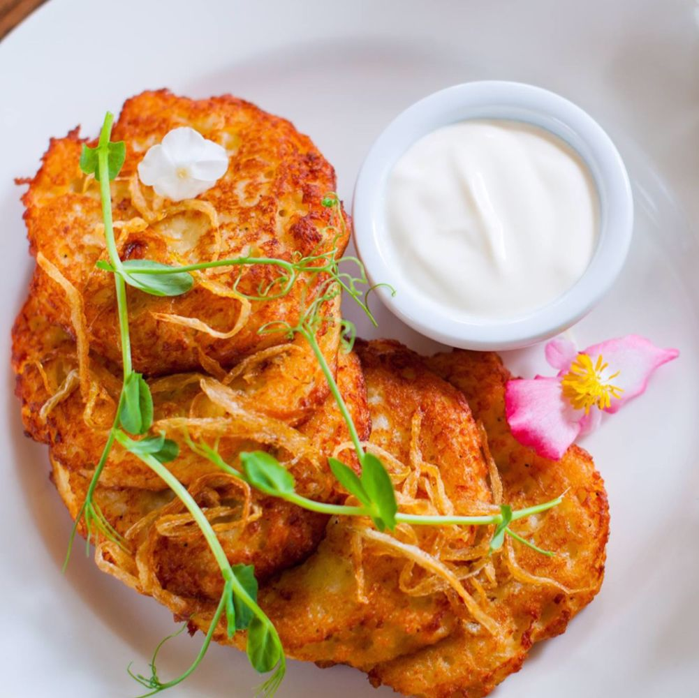
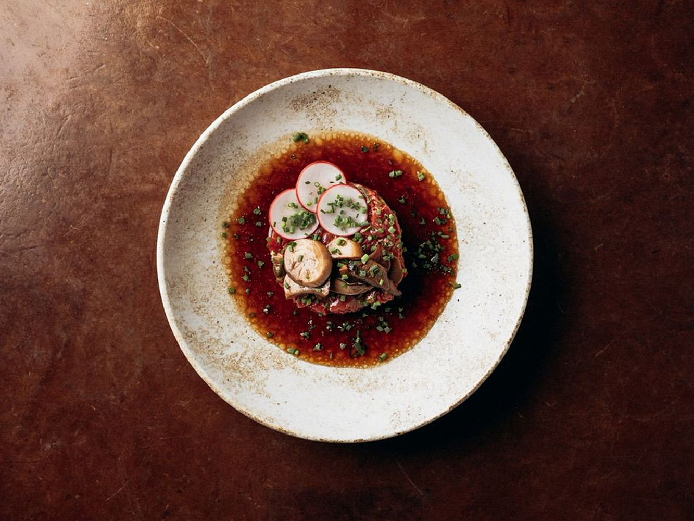
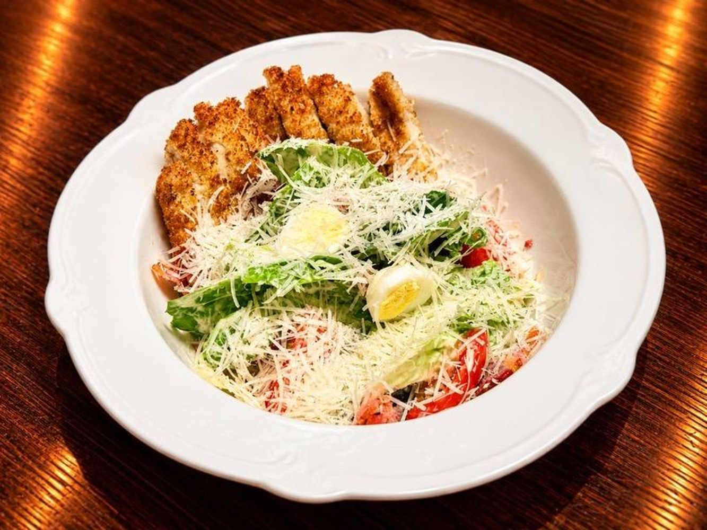

ГРУДЕНЬ · КОРПОРАТИВИ
Корпоратив без сюрпризів у чеку
Як обрати заклад за меню — ще до дзвінка адміністратору →
1/5
ГРУДЕНЬ · КОРПОРАТИВИ
Як обрати заклад за меню — ще до дзвінка адміністратору →
Звичайні ціни в меню закладів Києва:
за даними TipMyMenu, 26.11.2026 · без обслуговування й алкоголю
Відкрийте меню з цінами на TipMyMenu, складіть однаковий набір страв і порівняйте суму. Різниця на 20 людей буває вражаючою.
Меню закладів Києва з цінами — на TipMyMenu
посилання в біоДЛЯ КАФЕ Й РЕСТОРАНІВ
через які заклади досі друкують меню, що застаріває за місяць →
❌ Міф 1
✅ Насправді
Гість наводить камеру телефона на QR — і одразу бачить меню з фото й цінами. Без застосунків.
❌ Міф 2
✅ Насправді
На TipMyMenu QR-меню безкоштовне. Табличку A6 для друку і наліпку «Ми на TipMyMenu» беріть у кабінеті.
❌ Міф 3
✅ Насправді
Якщо ви працюєте в Poster — меню оновлюється з каси само: страви, ціни, фото. Стоп-лист можна вести з Telegram-бота.
Сторінка закладу, QR на столи, меню для сайту і Google Maps
tipmymenu.com/uk/restaurants/aboutДЛЯ ЗАКЛАДІВ НА POSTER
Підключення за 3 кроки →
Дозвольте доступ до меню. Якщо закладів кілька — оберіть точку продажу.
Протягом робочого дня ми створимо сторінку закладу з меню з каси й напишемо вам.
Вже є сторінка на TipMyMenu? Кабінет → «Каса Poster» → «Підключити Poster».
Застосунок лише читає меню й точки продажу. Замовлення, гроші й клієнтів не бачить і нічого в Poster не змінює.
tipmymenu.com/uk/restaurants/about
План на вихідні →
ціни й оцінки з меню на TipMyMenu, 26.11.2026
Petrus-ь

Хуторець на Дніпрі
Пишіть у коментарях — і ставте оцінки стравам на TipMyMenu
посилання в біо
зазвичай у Києві
на фото: Win Bar, тартар з яловичиною, 445 ₴ · ⭐ 5,0

зазвичай у Києві
+ ще й на чай вистачить ☕
на фото: Antwerpen, цезар з курячим шніцелем, 330 ₴
Пиши в коментарях 👇